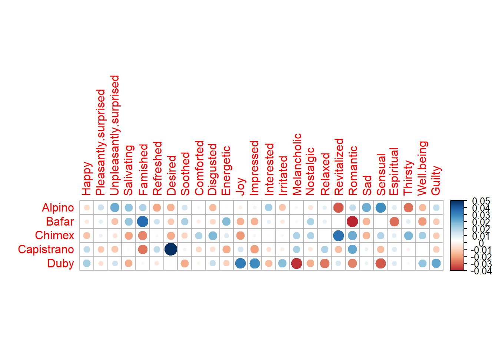
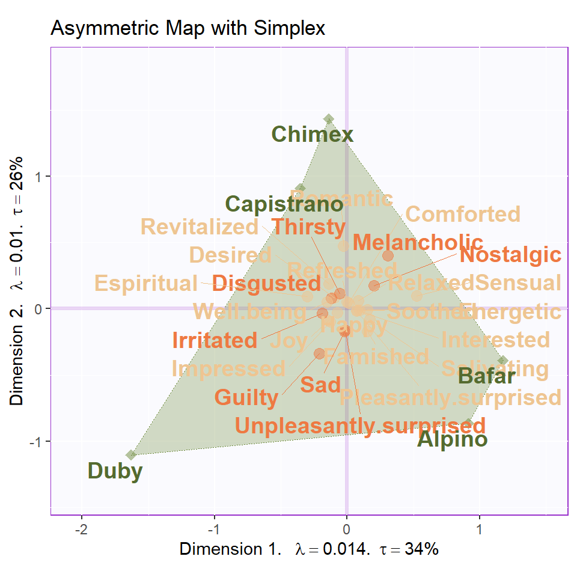

Chapter 5 Correspondence Analysis
5.1 Introduction of CA
What’s Correspondence Analysis (CA)? If you want me to answer this question shortly, CA is a special version of PCA. Originally, what CA does is to analyze contingency table (frequency distribution table). If you still remember the metaphor that doing research is to observe texture inside the tree (data), CA is the saw (method) exclusive to categorical data (tree). In CA, rows and columns will be treated equivalently and new orthogonal components will be generated for each item based on the contingency table.
Why PCA is not a good idea to analyze distribution data? PCA is sensitive mainly to the number instead of a relative frequencies, which implies us that when we want to investigate the relationship among this kind of variable, PCA will give us an inaccurate results. In order to reveal hidden information from data distribution and proportion, preprocessing and transformation are necessary before our analysis. Generally what we will do is to compute the average of rows and columns, then calculate their expect number (masses). After that, we try to look at the residuals between expected proportions and real numbers. By using the singular vector decomposition (SVD), we can have left and right singular vectors correspond to row and columns of the table. Based on the results, we can plot row factor scores and column factor scores from the first two dimension. Basically it is what CA do in our analysis.
In the rest of this chapter, we will focus on the interpretation of our results in low income sausage example 3.2
5.2 Computation
First of all, similar with PCA and all other analysis, a preprocessing step is necessary for our results. In CA’s analysis, I am not using our main data set, instead, I am using a commercial food data table including various kinds of sausage but for low income population. although I don’t know why it is labeled as “low income”.
There are several matrices important for plotting our heatmap. Since it is a frequency data table (people chose words that best describe their feeling on each product), chi2-test is necessary. From the results of chi2-test and heatmap, we can know that specific emotional words are highly related with some products, such as “comforted feeling” for Capistraino
# Data preprocessing
rownames(table.sausage) <- table.sausage$Product
table.sausage.ca <- subset(table.sausage,
select = -c(Product))
# get chi2
chi2.sausage <- chisq.test(table.sausage.ca)
inertia.cells <- chi2.sausage$residuals / sqrt(sum(table.sausage.ca))
Z <- table.sausage.ca / sum(table.sausage.ca) # observed
r <- as.matrix(rowSums(table.sausage.ca)) # expected row
c <- as.matrix(colSums(table.sausage.ca)) # expected column
# SVD computation
test.inertia.cells <- as.matrix(diag(as.vector(r^(-1/2)))) %*%
as.matrix(Z - r%*%t(c)) %*% as.matrix(diag(as.vector(c^(-1/2))))
rownames(test.inertia.cells) <- rownames(table.sausage.ca)
colnames(test.inertia.cells) <- colnames(table.sausage.ca)5.3 Heatmap
Also, it is worth to mention that the subtraction of rcT from Z gave us a intrinsic results about which emtional words will be associated with all the products.From the inertia heatmap, we can know that some consumers/judges will have more difference on some product, such as Desired on Capistrano. The heatmap gave us an overall information about some statistical attribution of the data table.
# heatmap of Z - r%*%t(c)
Z.heatmap <- corrplot(as.matrix((Z - r%*%t(c))),
is.cor = FALSE)
# heatmap of inertia cells
inertia.heatmap <- corrplot(as.matrix((inertia.cells)),
is.cor = FALSE)
5.4 Computation
And then, as usual, we need to do some computation to have our CA results. Due to the switch on and off at Symmetric option, we can have totally different two factor scores map in our study: The Asymmetric one and Symmetric one. For better understanding, the symmetric one means that we treated column and rows in same manner; The asymmetric method means that sometimes the row and column variables have special connection (such as dependent and independent variables). Asymmetric method can help us better understanding the distance between each observation or each group in factor scores.
res.CA.sym <- epCA(t(table.sausage.ca),
symmetric = TRUE,
graphs = FALSE)
res.CA.sym.inf <- epCA.inference.battery(t(table.sausage.ca),
symmetric = TRUE,
graphs = FALSE)
res.CA.sym.inf.IJ <- epCA.inference.battery(table.sausage.ca,
symmetric = TRUE,
graphs = FALSE)
res.CA.asym <- epCA(t(table.sausage.ca),
symmetric = FALSE,
graphs = FALSE)
res.CA.asym.inf <- epCA.inference.battery(t(table.sausage.ca),
symmetric = FALSE,
graphs = FALSE)
eigs <- res.CA.sym$ExPosition.Data$eigs
eigs.permu <- res.CA.sym.inf$Inference.Data$components$eigs.perm
tau <- res.CA.sym$ExPosition.Data$t
p.val <- res.CA.sym.inf$Inference.Data$components$p.vals
fs <- res.CA.sym$ExPosition.Data$fi # sym and assym are same
fj.s <- res.CA.sym$ExPosition.Data$fj
fj.a <- res.CA.asym$ExPosition.Data$fj
cj <- res.CA.sym.inf$Fixed.Data$ExPosition.Data$cj
ci <- res.CA.sym$ExPosition.Data$ci
boot.ratios.fj <- res.CA.sym.inf$Inference.Data$fj.boots$tests$boot.ratios
boot.ratios.fi <- res.CA.sym.inf.IJ$Inference.Data$fj.boots$tests$boot.ratios5.5 Scree Plot
For the Scree plot and permutation, I have already introduced the concept before, so it is needless to repeat them again 4.4. From the results, I can know that our CA results may be located at the 5% position in the distribution.
Figure 5.1: CA Scree Plot
Figure 5.2: CA Scree Plot
Figure 5.3: CA Scree Plot
5.6 Symmetric & Asymmetric Plots
This chunk contains symmetric plotting. We can see that I manually classified these emotional words myself. It is obvious that component 1 mainly represents the positive words and component 2 is negative.
# get some color, positive =1 and negative =2
color.ca <- as.matrix(t(table.sausage.ca)[,1])
rownames(color.ca) <- rownames(t(table.sausage.ca))
color.ca <- c(1,1,2,1,1,1,1,1,1,2,1,1,1,1,2,2,2,1,1,1,2,1,1,2,1,2)
color.ca[which(color.ca == 1)] <- index[1]
color.ca[which(color.ca == 2)] <- index[2]
# dimension 1
d = 1
# generate Symmetric Map
CA.symMap <- createFactorMapIJ(fs,
fj.s,
col.points.i = color.ca,
col.labels.i = color.ca)
fj.labels <- createxyLabels.gen(d,(d+1),
lambda = eigs,
tau = round(tau),
axisName = "Component "
)
Map.fs.sym <- CA.symMap$baseMap +
fj.labels +
CA.symMap$I_points +
CA.symMap$I_labels
Map.fj.sym <- CA.symMap$baseMap +
fj.labels +
CA.symMap$J_points +
CA.symMap$J_labels
Map.fs.sym
Map.fj.symFigure 5.4: CA Symmetric Plot
From the Asymmetric simplex plot, we can have a much closer look at the distance between products and emotional words. Chimex and Capistrano may give us a romantic feeling and Bafar is more sensual.
CA.asymMap <- createFactorMapIJ(fs,
fj.a,
col.points.i = color.ca,
col.labels.i = color.ca,
cex.i = 3,
cex.j = 3,
text.cex.i = 5,
text.cex.j = 5)
zeSimplex <- PTCA4CATA::ggdrawPolygon(fj.a,
color = 'darkolivegreen4',
size = .3,
fill = 'darkolivegreen4',
alpha = .3,
linetype = 3
)
labels4CA <- createxyLabels(resCA = res.CA.asym)
Map.Asym <- CA.asymMap$baseMap +
zeSimplex +
labels4CA +
CA.asymMap$I_points +
CA.asymMap$J_points +
CA.asymMap$I_labels +
CA.asymMap$J_labels +
ggtitle("Asymmetric Map with Simplex")
Map.Asym
5.7 Contribution and Bootstrap Ratio Barplot
The contribution and boostrap ratio will give us more precise information about each variable’s importance in my results. It is interesting that in the barplots, I found that there are some positive words have different direction on component contribution. The romantic and melancholic has different valence but they are more closer to each other; Joy and sensual are much different than I expect for describing the sausage. As far as I am concerned, these emotional words are still too abstract to precise describe food. Thus, it could be the reason why the postive and negative valence are mixed together in our results.
# plot contribution barplots
plot.cb(cj=cj,
fj=fj.s,
boot.ratios = boot.ratios.fj,
fig=3,
horizontal = TRUE,
signifOnly = FALSE,
colrow = "row")
plot.cb(cj=ci,
fj=fs,
boot.ratios = boot.ratios.fi,
fig=3,
horizontal = TRUE,
colrow = "row",
signifOnly = FALSE,
col = color.ca)Figure 5.5: CA Contribution Barplots